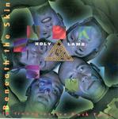

Home Artist links Label link

Holy Lamb - Beneath The Skin
| Artist: | Holy Lamb |
| Title: | Beneath The Skin |
| Label: | Pereferic Records |
| Length(s): | 59 minutes |
| Year(s) of release: | 2002 |
| Month of review: | [04/2004] |
Line up
Aigars Cervinskis
Juris Rats
Uldis Elerts
Mikus Rullis
Ugis Zemitis
Tracks
| 1) | Psychovertureture - In The Beginning | 1.33
|
| 2) | The Plan That Failed | 8.32
|
| 3) | Makhtartam And The Low Brotherhood | 5.40
|
| 4) | The Conquest | 8.19
|
| 5) | Audioburg | 5.29
|
| 6) | Stars Fell On Fertile Lands | 3.38
|
| 7) | Wear It In The Morning | 7.53
|
| 8) | Beneath The Skun | 1.12
|
| 9) | The Meeting Of The Majorminors | 5.53
|
| 10) | Beneath The Skin | 5.32
|
| 11) | The End - Headturn's Release | 5.36
|
Summary
The music
Beneath The Skin is something of a rock opera by Latvian band Holy Lamb. This opera brings us what we often see with rock opera's: some strong driven sections, but also sections in which near spoken vocals dominate. Then there's the sections that are somewhat tongue in cheek, in a Zappa-esque style.
This results in a mixed bag. The organ in The Conquest for instance has a monumental feel (although the track does appear to lose its way when the guitar takes over), where the discussions between assorted oddballs in Makhtartam And The Low Brotherhood stretches the yawn muscles. Unfortunately such non-sensicals do return on a regular basis. Stars Fell On Fertile Lands is mostly an acoustic guitar track. Closer The End is largely guitar solo with some keys, only becoming vocal towards, well, err, the end.
Conclusion
This rock opera is halfway decent. I'm not too fond of the sections with the funny voice, and the balance between the expected opera and nonsense (Zappa-like) elements seems to tip just a little too far towards nonsense. Having said that, the album lacks in memorable sections. The result is an album that is pretty listenable (which hasn't always been the case with projects of the kind), but nothing exceptional on the other hand. The fact that it both lacks in strong sections, while it has a number of weak sections doesn't speak for it. Still, the nicer sections make me come up with an "Ambivalent".
© Roberto Lambooy